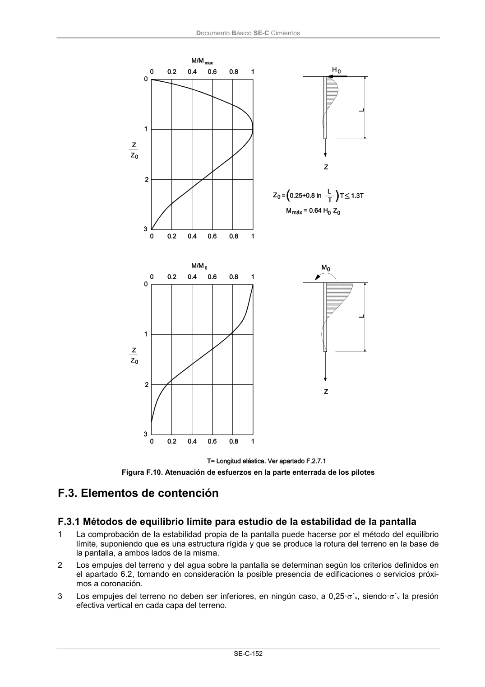

DB-SE-C Cimientos · edición 2019-12-20 · capa oficial
Documento DB-SE-C-oficial · SHA-256 del PDF a71133f4b0dca253e45ea3071c70f2a512354bcc5cd841bf89b1a502f567ac5e
Copia fiel del PDF fuente · Fuente oficial
Ficha de la disposición en la fuente oficial
Formatos: JSON del segmento · Markdown
F.2.8 Cálculo de esfuerzos en pilotes 1 Para obtener los esfuerzos en la parte enterrada de los pilotes, cuando se utilice el mismo modelo que el indicado en el apartado F.2.7.1, se aceptará la solución simplificada que se recoge en la Fi- gura F.10. 2 Para poder usar el modelo estructural de la Figura F.10 se determinarán previamente los valores de cálculo de los efectos de las acciones de la estructura sobre el pilote según se indica en el apartado 2.4.2.5 utilizando los coeficientes de seguridad parciales, E, que se indican en la tabla 2.1. En dicha figura a estos esfuerzos se les denomina Ho y Mo (cortante y momento flector, respectivamente). 3 El valor de la profundidad zo, en la Figura F.10 es función exclusiva de la longitud enterrada del pilote, que se denomina “L” en dicha figura, y de la longitud elástica “T”, que se define en el aparta- do F.2.7.1 en función del producto de inercia de la sección transversal del pilote (EI) y de la defor- mabilidad del terreno. 4 El momento flector en la parte enterrada de la Figura F.10 se puede evaluar componiendo las par- tes debidas al esfuerzo de corte, Ho, parte superior de la figura, y el debido al momento flector Mo, parte inferior de la figura. Documento Básico SE-C Cimientos SE-C-152 Figura F.10. Atenuación de esfuerzos en la parte enterrada de los pilotes
